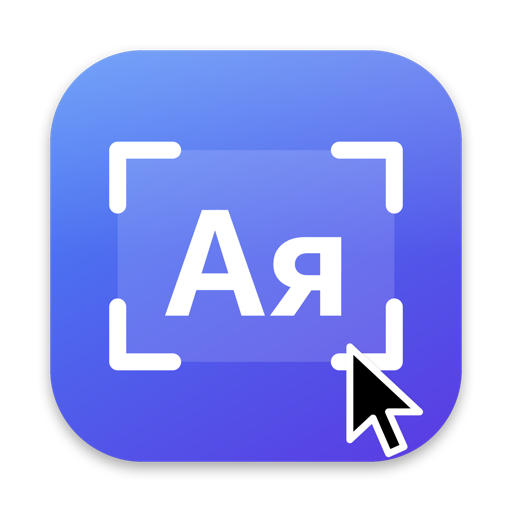

Как посмотреть историю буфера обмена на Mac
Вы скопировали ссылку, потом номер телефона, потом абзац — и снова нужна ссылка. Классический буфер обмена на Mac помнит только последнее скопированное. Вот что с этим можно сделать.
Посмотреть, что в буфере сейчас
В Finder выберите Правка → Показать буфер обмена. Откроется маленькое окно с текущим содержимым. Там всегда одна запись: всё новое скопированное её заменяет.
С универсальным буфером обмена эта запись переходит между Mac, iPhone и iPad, если на них один Apple ID и включён Handoff, — удобно, но запись по-прежнему одна.
История буфера в Spotlight
В macOS Tahoe 26 в Spotlight появилась история буфера обмена. Если ваш Mac работает на ней, откройте Spotlight и переключитесь на раздел буфера обмена. В более старых версиях macOS встроенной истории нет вовсе.
История в строке меню: Lingrab
Lingrab хранит всё скопированное в своём меню в строке меню. Нажмите на запись — и она снова в буфере, готова к вставке. Бесплатная версия помнит 20 записей, Lingrab Pro — до 500.
История буфера полезна, только если она безопасна, поэтому Lingrab никогда не сохраняет:
- пароли, скопированные из менеджеров паролей;
- адреса криптокошельков и фразы восстановления;
- приватные ключи и API-ключи.
История остаётся на вашем Mac. В Lingrab нет аккаунтов, и он ничего никуда не отправляет.
Почему важно, что история пропускает
Менеджеры паролей помечают то, что кладут в буфер, как скрытое, чтобы порядочные программы это не сохраняли. История, которая не обращает внимания на эту пометку, держит ваши пароли открытым текстом в меню. Выбирая менеджер буфера обмена, проверьте, что он уважает скрытые записи и отсеивает секреты, которые вы копируете вручную, например фразы восстановления и API-ключи.
Вопросы
История сохраняется после перезагрузки?
Системный буфер — нет: он очищается при выходе из системы и перезагрузке. Менеджер буфера обмена хранит свою историю сам.
Можно ли добавить в историю текст, который не выделяется?
Да. Текст, захваченный с экрана сочетанием ⌥⌘1 в Lingrab, попадает в буфер и в историю, как и всё, что вы копируете.
